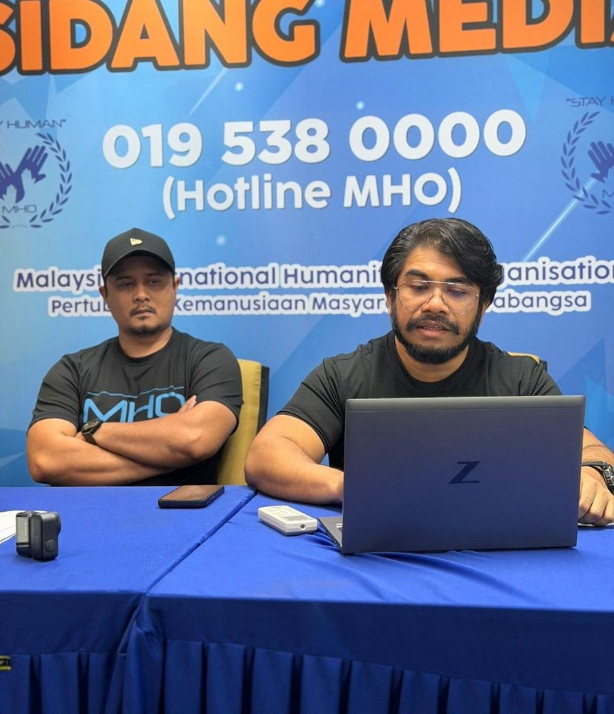
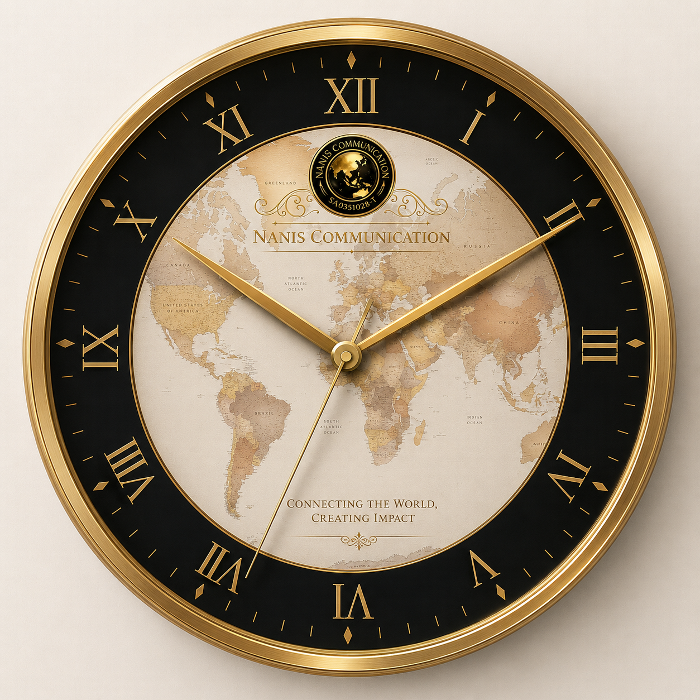

MUSIC · MILESTONES · SOLO CAREERS · ARMY · GLOBAL IMPACT

NANIS.COM / IPK MEDIA
SPECIAL FEATURE · MHO
BUKAN SEKADAR BERSUARA:
DATUK HISHAMUDDIN HASHIM DAN BARISAN PERJUANG MHO
Di sebalik setiap kes, ada manusia. Di sebalik setiap suara,
ada harapan. Mengenali perjuangan Datuk Hishamuddin Hashim
bersama barisan aktivis dan pengurus kes MHO dalam membawa
suara kemanusiaan kepada masyarakat.
Mengangkat kisah dunia hiburan, selebriti, drama, filem, muzik,
acara serta cerita-cerita menarik dari perspektif Nanis.Com.
✨ HIBURAN
9 SEPTEMBER 2026 · KUALA LUMPUR
TAKDIRNYA CINTA: APABILA UTV MEMBUKA LANGKAH BAHARU DALAM DUNIA HIBURAN
Ulasan peribadi Nanis D. Webster mengenai majlis ulang tahun
UTV dan karya Takdirnya Cinta, termasuk barisan pelakon serta
suasana pelancaran yang berlangsung di Aurum GSC, The Exchange TRX.
EHP: Mengapa Tuntutan Bilion Ringgit Masih Belum Selesai?
Oleh: Nanis.Com
20 September 2026
Perkembangan pelaburan FELDA dalam Eagle High
Plantations, pelaksanaan Put Option, keputusan
timbang tara SIAC serta proses penguatkuasaan di Indonesia.
Tiada Wang yang Didakwa Disakau, Tetapi Benarkah
FELDA Berdepan Risiko Kehilangan Potensi Pendapatan
Ratusan Juta Ringgit Akibat Projek KLVC?
Oleh: Nanis.Com
Projek Kuala Lumpur Vertical City pernah dirancang
sebagai pembangunan bernilai berbilion ringgit
melibatkan tanah FELDA. Selepas projek terhenti,
timbul persoalan mengenai potensi pulangan serta
tuntutan pampasan yang difailkan.
RM500 juta – RM830 juta
Potensi pulangan berbanding tuntutan pampasan
RM3.5 bilion.
Stories that connect people, ideas and the future —
technology, economy, education, current affairs,
health, sports, community and national development.
ANALISIS POLITIK
RAFIZI, JANGAN MENAKUT-NAKUTKAN RAKYAT!
SKANDAL KEWANGAN BUKAN MONOPOLI BN DAN PN
Oleh: Shahbudin Embun, Penganalisis Politik.
Kenyataan Rafizi Ramli mengenai BN dan PN perlu
dinilai secara terbuka. Integriti, ketelusan dan
pertanggungjawaban mesti terpakai kepada semua pihak.
POLITIK DINAMIK, BUKAN “SWINGER’S CLUB”:
RAFIZI PERLU MEMBEZAKAN REALITI DEMOKRASI
DENGAN KIASAN YANG MENGUNDANG SALAH FAHAM
Oleh: Shahbudin Embun
Kerjasama politik tidak semestinya bermakna
prinsip perjuangan telah diketepikan. Dalam
sistem demokrasi berparlimen, pembentukan
kerajaan memerlukan rundingan, sokongan majoriti
dan persefahaman antara parti. Namun, setiap
kerjasama perlu dinilai berdasarkan mandat rakyat,
dasar yang dipersetujui dan amanah kepimpinan.
Politik Dinamik, Bukan Politik Tanpa Prinsip
Mandat rakyat, akauntabiliti dan kepentingan awam
mesti menjadi ukuran utama.
Daripada Akar Umbi ke Masa Depan:
Membina Generasi Muda Melalui Sukan, Pendidikan & Teknologi
Pesanan Raja Muda Selangor, Tengku Amir Shah ibni Sultan
Sharafuddin Idris Shah Alhaj, menekankan kepentingan
pembangunan sukan akar umbi, pertandingan komuniti dan
pembentukan generasi muda yang aktif serta berdaya saing.
Driving Innovation in Media, Technology, Education and Humanitarian Development
In a rapidly evolving digital era, information has become one of the world's most valuable resources. As societies become increasingly connected through technology, the responsibility of media organizations extends far beyond news reporting. It encompasses education, public awareness, innovation and community development.
NANIS Communication remains committed to empowering individuals and communities through responsible media engagement, technological advancement, educational awareness and humanitarian values.
🌕 Advancing Responsible Media
We believe that ethical communication and credible information are essential pillars of a progressive society. Through media, public awareness initiatives and digital communication excellence, NANIS Communication strives to strengthen public trust and encourage meaningful dialogue.
🌕 Embracing Technology
Technology continues to redefine the way people communicate, learn and interact. NANIS Communication embraces technological advancement as a catalyst for growth, connectivity and innovation.
🌕 Supporting Education
Education remains the foundation of a knowledgeable and resilient nation. Through digital platforms and information sharing initiatives, we encourage lifelong learning and knowledge empowerment.
🌕 Championing Humanity
Beyond technology and media, NANIS Communication advocates humanitarian principles that emphasize compassion, respect, responsibility and community support.
Official Statement
"NANIS Communication stands firmly on the belief that knowledge, technology and humanity must move forward together. Through responsible media practices and innovative communication solutions, we are dedicated to creating opportunities that empower communities, strengthen education and inspire positive change for future generations."
Empowering Communities Through Information, Technology and Humanity
Media Excellence • Digital Innovation • Educational Advocacy • Humanitarian Responsibility


Live Entertainment

ALL MEDIA FAN CLUB
Information & Entertainment
BTS ARMY
Global social campaigns and communication
NANIS MHO
Info & Supporter
DATO' HISHAM (MHO)
Humanitarian missions & global awareness.